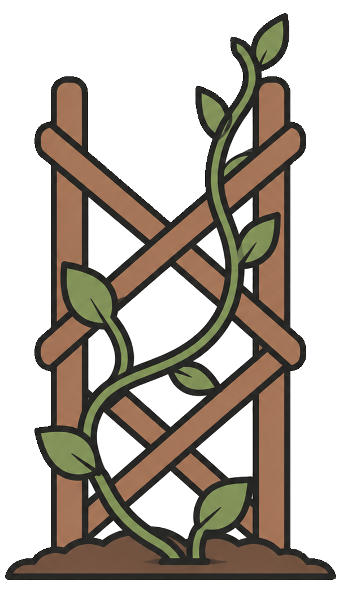

Turn the place you live into a place you belong.
Family In My Backyard (FIMBY) is a shared space for the people on your street — to ask for help, offer what you have, and stay connected in small everyday ways. Not a city-wide feed. Just the people around you.


Good morning, neighbour
The neighbourhood is waking up
 THANK YOU
THANK YOU
 BULK BUY
BULK BUY
 LIBRARY ITEM
LIBRARY ITEM

 Home
Home
 Library
Library

 Messages
Messages
 My Stuff
My Stuff
Example posts — what a week on FIMBY can look like.
We're more connected than ever.
So why do so many of us still feel alone?
Designed to stay local
FIMBY keeps things close to home. You'll see the same neighbours, not thousands of strangers. Over time, names become familiar, and small acts of care start to build real relationships.
What if where you live felt a little more like family?
Not sentimental. Just people who know your name, notice when you're carrying too much, and leave room at the table.
Here's what that looks like
Small, everyday ways to ask, offer, and stay connected with people close enough to actually show up.

Ask & Offer
Need a hand moving a couch? Got extra tomato starts? Ask, or offer — both are normal here.
Lend & Borrow
Tools, kitchen gear, books — from people on your block.

Help Nearby
Borrow a skill like you'd borrow a drill — a neighbour who fixes bikes, tutors, translates, or lends a hand.

Gather
Backyard dinners, block parties — and standing rhythms like a weekly movie night or monthly soup night you can count on.

Shared Life
Thank-yous, stories, prayer if that's your thing — never required.

Local orgs
Churches, centres, and community groups post meals, rides, and check-ins — steady tables neighbours can count on, right in the feed.
Receiving help isn't failure — it's where trust starts.
Every ask, offer, and shared meal is reaching for the same thing.
Neighbours who are rooted in each other's lives.

Rooted in real relationship
FIMBY is a small, practical attempt to widen the circle of family — grounded in real life and real place. Not a performance platform. Just a simple structure that gives ordinary care somewhere to grow.
This is a different way of living
FIMBY isn't really about software. It's about undoing something we've quietly accepted: that you can live a few doors apart for years and never learn a name.
When neighbours share meals, tools, prayers, and time, the lines we usually sort each other by (age, politics, class) start to matter less. The person you'd have walked past becomes the one who checks in after surgery.
That's the dream: not a bigger network, but a neighbourhood that feels a little more like family. You can be part of it.
Find your neighbourhood now →
But we've been doing it for twenty years
If a neighbourhood that feels like family sounds like wishful thinking, we understand. But it isn't a thought experiment. FIMBY was forged on some of the hardest blocks in Canada — Vancouver's Downtown Eastside — through twenty-plus years of neighbouring before it was ever an app: block parties, shared meals, borrowed ladders, and showing up when someone was carrying too much.
The software is newer than that story. What stayed the same is the radius — a block, a building, a few streets — where you see the same faces again and small acts of care can turn into real trust.
It began as Christian neighbouring here — and it's open to everyone. Prayer and faith stories are welcome; they're never required.
FIMBY isn't a crisis line or a replacement for shelters, detox, or health care — it's everyday neighbouring that sits alongside formal supports.
No one gets left out
You don't have to be online to belong here. Someone you trust — a neighbour, a family member, a church volunteer — can take part on your behalf: posting, responding, and messaging as you. Built for elders, people with low tech confidence, or anyone who'd rather have someone close help them join in.
Parents can do the same for a kid in their household — a parent-managed family profile, so a child can be known by name in the neighbourhood while a parent is always the one at the keyboard.
And you decide how neighbours can show up for you — help is welcomed, never assumed.
Ready to meet your neighbours?
If this neighbourhood is part of your real life, you're welcome here.
Join now
Part of a community group or organization? You can join too — just tick the box when you sign up.
For adults 19+ in BC. Families welcome — parents add a family profile from their own login. More in the FAQ.
Bring FIMBY here
FIMBY grows one neighbourhood at a time. If you're a neighbour, organizer, church, or community group who'd help launch a hub, we'd love to hear from you.
- Gather 10–20 neighbours you can actually recognize
- Host a low-key intro — coffee, porch, or community room
- Optional moderator role with support from the FIMBY team
A few practical things, before you go
Will this just be another dead app?
FIMBY is neighbourhood-sized on purpose — the same faces, again and again — not a city-wide feed chasing engagement.
Read the full answer →Who can see my information?
Only your neighbourhood — never the whole city. Your contact details are never shared automatically; you choose what to share, with whom, and can take it back anytime.
Read the full answer →Do I need to be Christian?
No. FIMBY is open to all neighbours. Christian roots, inclusive welcome.
Read the full answer →Is FIMBY safe for LGBTQ+ people?
Yes — explicitly welcome, with community standards that protect dignity.
Read the full answer →Isn't lending my stuff risky?
A little — trusting people always is. But it isn't blind. Before anyone can borrow, a neighbour who knows them vouches: "I know this person, they're a good egg." So you're not gambling on a stranger, you're trusting a neighbour's judgement and passing that same chance along. You risk trusting them, they trust you back. That's how neighbours slowly become something more like family.
Read the full answer →Is it free?
Yes — free to you. No ads, no premium tiers, no data sales. FIMBY is a non-profit endeavour built to serve the people who use it, sustained by donations and community contributions.
Read the full answer →